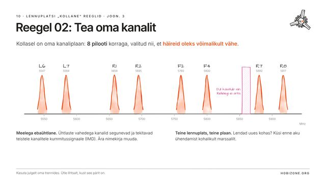
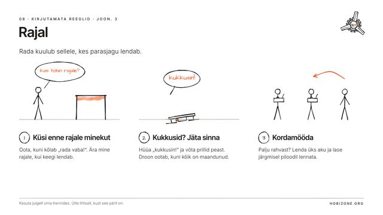

Õppetee
Teemad järgivad esimese hooaja järjekorda. Alusta, kust tahad.
Alustuseks
Peatüki lõpuks oskad droone eristada, tead, kuidas terveks jääda, ja tunned reegleid.
Lendamine
Peatüki lõpuks oskad ette näha, mida droon teeb, lennata kindlat joont ja alustada trikkidega.
Video ja raadio
Peatüki lõpuks on su pilt selge ja ühendus puhas ning sa ei riku kunagi kellegi teise pilti.
Ehitamine ja parandamine
Peatüki lõpuks oskad ehitada 5″ drooni, hoida selle lennukorras ja leida, mis on katki.
Rajad
Peatüki lõpuks oskad rada lugeda, selle elemente lennata ja ise raja ehitada.
Koos lendamine
Peatüki lõpuks tunned reegleid, nii kirjutatud kui kirjutamata.

Tund 6.2 · #10Lennuplatsi „Kollane“ reeglidTea oma kanalit. Hoia teisi.10 min · 10 slaidi▶
Tund 6.3 · #08Kirjutamata reeglidLenda nii, et ka kõik teised saaksid lennata.10 min · 10 slaidi▶Droonisport
Peatüki lõpuks oskad võistelda, tunned võistlusformaate ja tead, kuidas jõuda DRTE-sse.
Litsentsid ja eksamid
Peatüki lõpuks tead, kus tohid lennata ja kuidas saada iga test, registreering ja litsents. Siin on protsessid, mitte eksamimaterjal.
Midagi ei leitud.